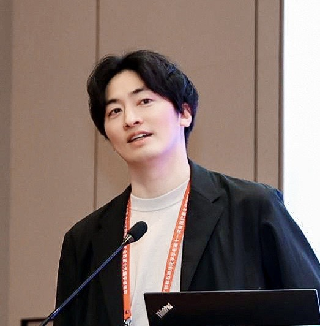

福田 航平
 助教（任期付）大阪大学大学院理学研究科 附属フォアフロント研究センター所属
大阪大学大学院理学研究科 宇宙地球科学専攻（兼任）
〒560-0043 大阪府豊中市待兼山町1-1
ORCID: 0000-0002-8883-9251
職歴
- 2022年4月 - 現在: 現職
- 2021年7月 - 2022年3月: ウィスコンシン大学マディソン校 アシスタントサイエンティスト
- 2018年7月 - 2021年6月: ウィスコンシン大学マディソン校 リサーチアソシエイト (アドバイザー: 木多紀子)
学歴
- 2018年3月: 東京大学 理学系研究科 地球惑星科学専攻 博士（理学） 指導教員: 比屋根 肇
- 2014年3月: 東京大学 理学系研究科 地球惑星科学専攻 修士（理学） 指導教員: 比屋根 肇
- 2011年3月: 広島大学 理学部 地球惑星システム学科 学士（理学） 指導教員: 寺田 健太郎
- 2007年3月: 宮崎大宮高等学校文科情報科卒
Kohei Fukuda
Assistant Professor (Non-tenured)Forefront Research Center, Graduate School of Science, The University of Osaka
Department of Earth and Space Science, Graduate School of Science, The University of Osaka (Adjunct)
1-1 Machikaneyama-cho, Toyonaka, Osaka 560-0043, Japan
ORCID: 0000-0002-8883-9251
Academic Positions
- Apr. 2022 - Present: Current position
- Jul. 2021 - Mar. 2022: Assistant Scientist, University of Wisconsin-Madison
- Jul. 2018 - Jun. 2021: Research Associate, University of Wisconsin-Madison (Supervisor: Noriko T. Kita)
Education
- Mar. 2018: Ph.D. in Science, The University of Tokyo (Supervisor: Hajime Hiyagon)
- Mar. 2014: M.Sc. in Science, The University of Tokyo (Supervisor: Hajime Hiyagon)
- Mar. 2011: B.Sc. in Science, Hiroshima University (Supervisor: Kentaro Terada)
- Mar. 2007: Graduated from Miyazaki Omiya High School (Communication & Humanities Course)